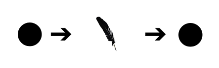

"The Live Blog is the first native medium of the web"
Martin Belam, IA at The Guardian

Illuminated Manuscripts, radio, the novel, the Internet - all media, you might think. But thinking of internet as a medium has plenty of negative consequences.